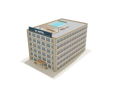
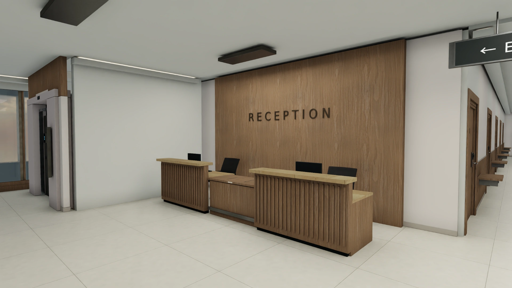
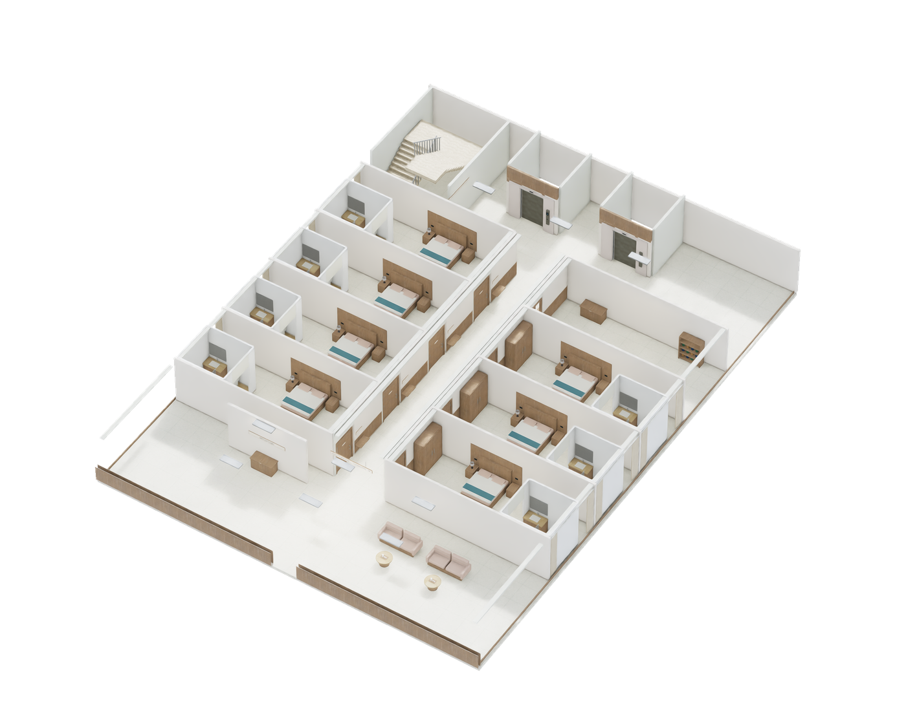

到达指定客房层
从一楼乘电梯到指定客房层，核对楼层并完整驶出；目标层与出生层不同。
通用任务 · 双本体验证待完成ENVIRONMENT 02 / 9
02HOTEL & HOSPITALITY


Interior
INSIDE THE ENVIRONMENT
Select a level to explore its interior.

CAPABILITIES & EMBODIMENTS
通用任务面向 FWMiniPiper 与 G1；专用任务测试指定本体的特有能力。当前均为待验证设计，不表示已完成物理执行。
一楼 Reception；二至六楼 Guest Service、客房和 Housekeeping Pickup。楼层差异主要是前台、客房服务点与房号，不假设某层独占洗衣或餐饮功能。
从一楼乘电梯到指定客房层，核对楼层并完整驶出；目标层与出生层不同。
通用任务 · 双本体验证待完成空手从一楼到四楼指定公共停靠区，再重新呼梯返回一楼；两次完整进出和中间停靠必须有历史证据。
通用任务 · 双本体验证待完成用初始已授权且可物理推拉的客房门完成进入、退出和关门；基础项不要求持卡与推门同时进行。
通用任务 · 双本体验证待完成控制器已支持显式初始授权且门关闭；仍须冻结任务配置与双本体见证。
尚未启用正式评测；需完成初态配置、成功判据及指定本体的完整物理轨迹验证。
从可抓取卡座取正确房卡并贴近读卡器；授权后暂放房卡，再推开客房门、通过并关闭。
通用任务 · 双本体验证待完成卡座、卡片夹持和暂放面须验证；解锁保持必须足够完成单臂顺序动作，否则此项阻塞，不能改成双手并发。
尚未启用正式评测；需完成初态配置、成功判据及指定本体的完整物理轨迹验证。
在门已打开的客房内，将指定灯设为客人要求的开关状态，其他灯保持原状。
通用任务 · 双本体验证待完成在本场景指定可达空调面板上观察初态，将开关、模式和设定值改为任务要求；至少一项需改变，其他设备不变。评分使用面板与控制器实际状态，不要求室温达到设定温度。
通用任务 · 双本体验证待完成需验证两种夹爪不误触相邻按键，并接入模式、开关和设定值裁判；不把按钮几何存在当作可按或热效果证据。
尚未启用正式评测；需完成初态配置、成功判据及指定本体的完整物理轨迹验证。
把二楼 Guest Service 的密封饮品送到六楼 603 客房外侧交接台；不要求倒水或开盖。
通用任务 · 双本体验证待完成需按本任务配置动态物品、身份或数量标签、交接与暂放区域及指令专属历史判据；源站点存在不代表新任务初态已实现。
尚未启用正式评测；需完成初态配置、成功判据及指定本体的完整物理轨迹验证。
从二楼 Guest Service 将带房号标签的两件刚性包装用品分别送到 204 和 603 外侧交接台，允许多趟。
通用任务 · 双本体验证待完成需按本任务配置动态物品、身份或数量标签、交接与暂放区域及指令专属历史判据；源站点存在不代表新任务初态已实现。
尚未启用正式评测；需完成初态配置、成功判据及指定本体的完整物理轨迹验证。
从四楼 Guest Service 的候选小件中找出符合描述的失物，送到一楼 Reception，其他候选保持原位。
通用任务 · 双本体验证待完成需按本任务配置动态物品、身份或数量标签、交接与暂放区域及指令专属历史判据；源站点存在不代表新任务初态已实现。
尚未启用正式评测；需完成初态配置、成功判据及指定本体的完整物理轨迹验证。
从六楼 Housekeeping Pickup 回收可抓取的密封待洗包装件，送到一楼 Housekeeping 交接区；不处理松散布草。
通用任务 · 双本体验证待完成需按本任务配置动态物品、身份或数量标签、交接与暂放区域及指令专属历史判据；源站点存在不代表新任务初态已实现。
尚未启用正式评测；需完成初态配置、成功判据及指定本体的完整物理轨迹验证。
将二楼 Guest Service 的一件用品送到二楼 204 外侧交接台，再在已授权且门开放的 204 内设置灯和空调面板；不要求温度实际达到设定值。
通用任务 · 双本体验证待完成需按本任务配置动态物品、身份或数量标签、交接与暂放区域及指令专属历史判据；源站点存在不代表新任务初态已实现。
尚未启用正式评测；需完成初态配置、成功判据及指定本体的完整物理轨迹验证。
从二楼 Guest Service 获取用品和授权卡，顺序完成贴卡、暂放、开门，把用品放到 204 的绑定室内支撑面，设置灯和空调后关门；必须支持单臂分步操作。
通用任务 · 双本体验证待完成需按本任务配置动态物品、身份或数量标签、交接与暂放区域及指令专属历史判据；源站点存在不代表新任务初态已实现。
尚未启用正式评测；需完成初态配置、成功判据及指定本体的完整物理轨迹验证。
本场景暂无专用任务。两种本体均可使用上方通用任务候选。